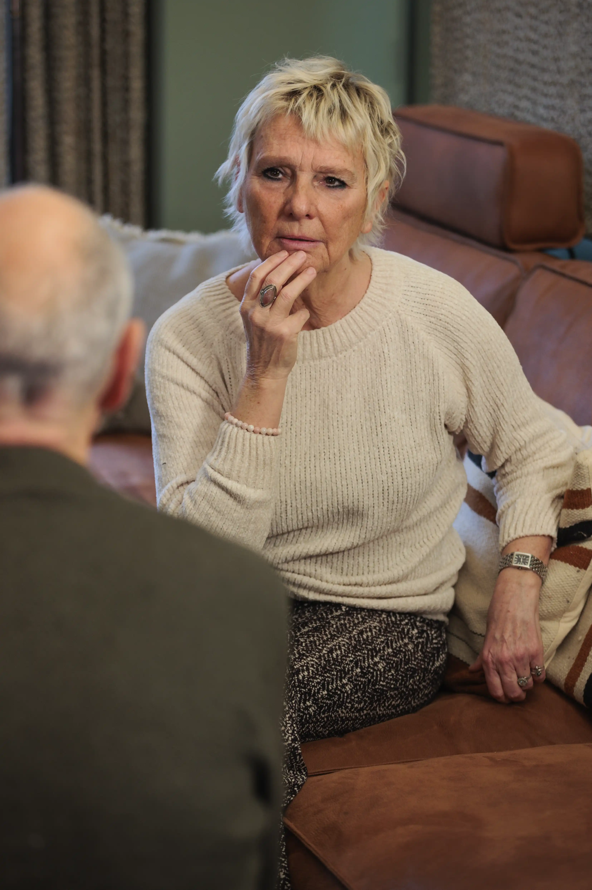
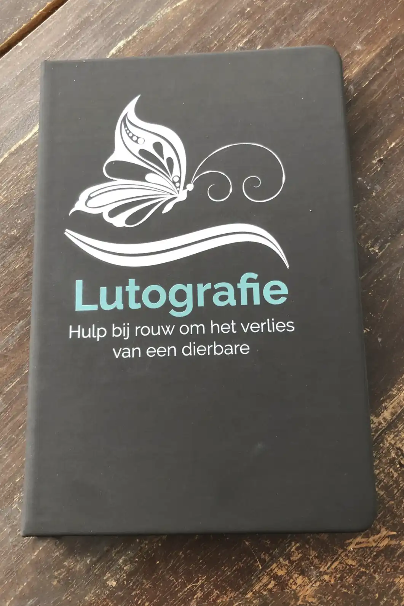
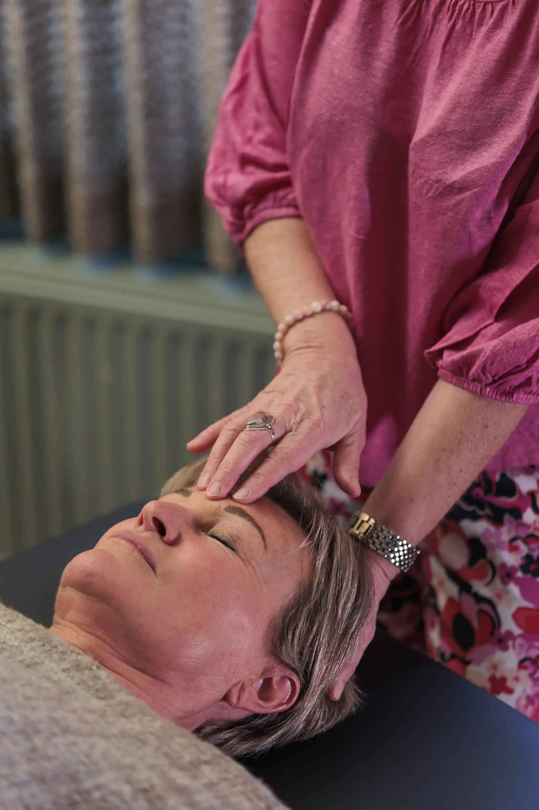
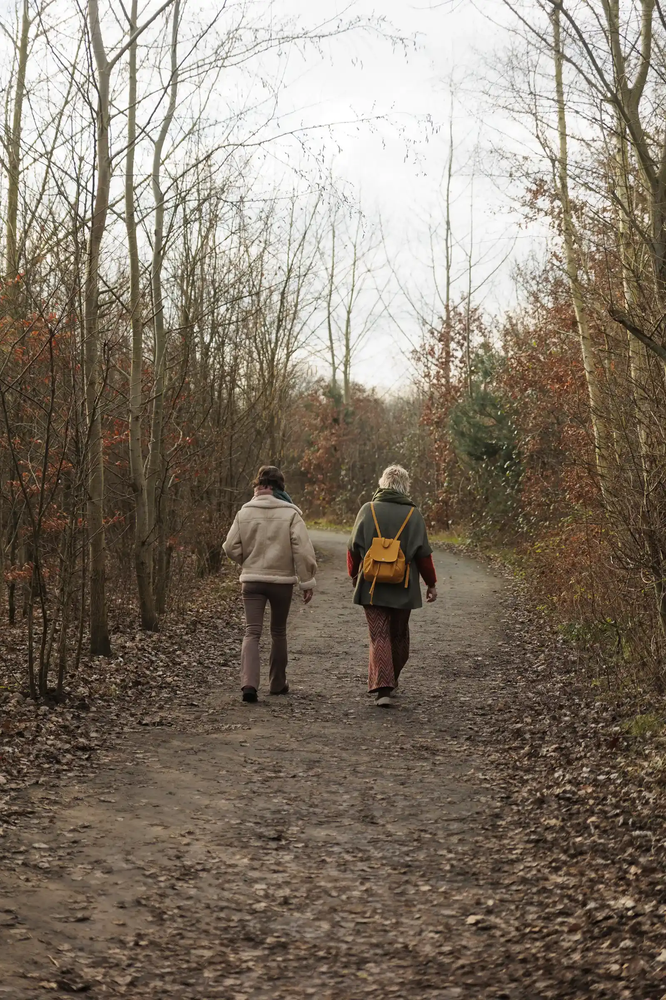

Woodhouse Rouwbegeleiding
Woodhouse Rouwbegeleiding
Waarvoor kan je bij mij terecht?
-
Consultatie
Ik ben er graag voor jou na het verlies van een dierbaar iemand, het verlies van een bijzondere relatie die op de klippen gelopen is, het verlies van je gezondheid, …
Er is een leven vóór en een leven na een ingrijpend verlies.
Dat leven na, daar wil je graag opnieuw iets moois van maken.
Lukt het je niet in je eentje, dan ben je altijd welkom om samen met mij op zoek te gaan naar balans, een nieuw levensperspectief en een versterkt zelfbewustzijn.
Je krijgt de ruimte om op verhaal te komen.
Ik luister naar jou, ik voel je, en help je om voorzichtig – op jouw tempo - weer vooruit te kijken.
-
Lutografie
Rouwen is moeilijk en zwaar. Rouwen is keihard werken.
Het is werken aan de rouw om het verlies én werken aan een nieuwe manier van omgaan met het leven.
Lutografie is een online verliesverwerkingsprogramma, toegespitst op verschillende vormen van verlies. Met Lutografie werk je online aan je eigen verlies onder begeleiding van oefeningen, meditaties, artikelen en lees- en kijktips.
Via een besloten facebookgroep kan je als je dat wenst in contact komen met lotgenoten.
Zo blijf je, ook tussen de sessies door, actief met het verwerken van het verlies.
-
Access bars
Access Bars is een energetisch lichaamsproces voor iedereen die meer rust, ruimte en ontspanning wil ervaren in lichaam en geest. Er komt meer balans tussen inspanning en ontspanning.
Access Bars zijn 32 drukpunten die energiebanen vormen door en om het hoofd. Hierin liggen al je ideeën, gedachten, overtuigingen en emoties opgeslagen. Ieder drukpunt staat voor een specifieke context in je leven.
Door deze punten (bars) in verschillende combinaties zachtjes aan te raken, wordt de elektromagnetische lading van alle houdingen, beslissingen en overtuigingen die je mogelijk hebben beperkt in de betreffende levensgebieden losgelaten.
Hierdoor ontstaat er meer rust in je hoofd, komt er ruimte en ontspanning in je lijf, en creëer je nieuwe mogelijkheden in je leven. Je haalt oude blokkades weg om ruimte te maken voor nieuwe mogelijkheden.WandelcoachingBuiten zijn praat voor sommigen gemakkelijker, het kan zijn dat je je comfortabeler voelt dan in gesprekken waarin je elkaar de hele tijd aankijkt.
Wandelen in de natuur helpt ook om ervaringen in perspectief te zetten, en om gedachten en gevoelens beter te doen stromen.
De natuur zorgt ervoor dat stemming en concentratie verbeteren, en dat stress afneemt. Een groene omgeving is sowieso goed voor onze lichamelijke én geestelijke gezondheid. Het ontspannende, herstellende effect van de natuur maakt wandelcoaching bijzonder. We hebben aandacht voor bewegen, aarden en bewust ademhalen.
Ik neem je graag mee op een wandeling van 1,5 à 2 uur in een bosrijke omgeving en langs de Schelde in Heusden, of op het strand en in de duinen van Knokke-Heist.